动画（Animation）：指通过连续播放一系列静止的画面来创造动态效果的视觉艺术形式。在ACGN文化中，通常指的是日本动画（Anime），以其独特的艺术风格、丰富的故事情节和深刻的人物刻画而闻名。
漫画（Comic）：是一种通过绘画和文字结合的艺术形式，用来讲述故事或表达观点。在ACGN文化中，漫画不仅是动画和游戏的基础，也是许多小说的灵感来源。
游戏（Game）：在ACGN文化中，游戏通常指的是电子游戏，尤其是角色扮演游戏（RPG）和视觉小说（Visual Novel）等，这些游戏往往具有丰富的剧情和深刻的人物关系。
一、初期阶段：在ACGN发展的初期阶段，动画、漫画和游戏是主要的内容形式。这些作品通常以日本产品为主，在华语圈青少年中形成了庞大的粉丝群体。
二、扩展阶段：随着轻小说和网络文学的兴起，ACGN领域逐渐扩展。轻小说以其独特的故事描绘手法和动漫风格的插画，吸引了大量动漫爱好者。同时，网络文学改编的ACG作品也越来越多，进一步丰富了ACGN的内容。
三、多元化阶段：近年来，ACGN领域呈现出多元化的趋势。除了传统的动画、漫画、游戏和轻小说外，还涌现了周边产品、声优、cosplay等衍生产品和活动。这些衍生产品和活动不仅丰富了ACGN的内容，还促进了ACGN文化的传播和发展。
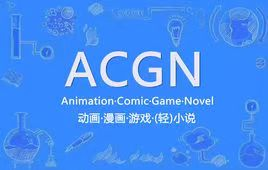
小说（Novel）：在ACGN领域，小说通常指轻小说，这是一种起源于日本的文学形式，以其轻松愉快的阅读体验和通常与动画、漫画、游戏相关的主题而受到青少年的喜爱。
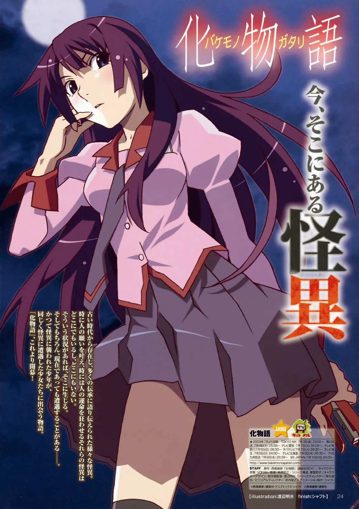
《命运石之门》游戏的故事发生在2010年夏天的秋叶原，玩家将扮演主角冈部伦太郎，一个自称“凤凰院凶真”的中二病大学生。他与几位朋友一起成立了“未来道具研究所”，每天发明一些看似无用的道具。然而，冈部偶然间发明了一种能够向过去发送电子信息的“时间机器”，这引发了一系列的事件，使得他们不得不面对由时间旅行带来的各种复杂问题和道德抉择。
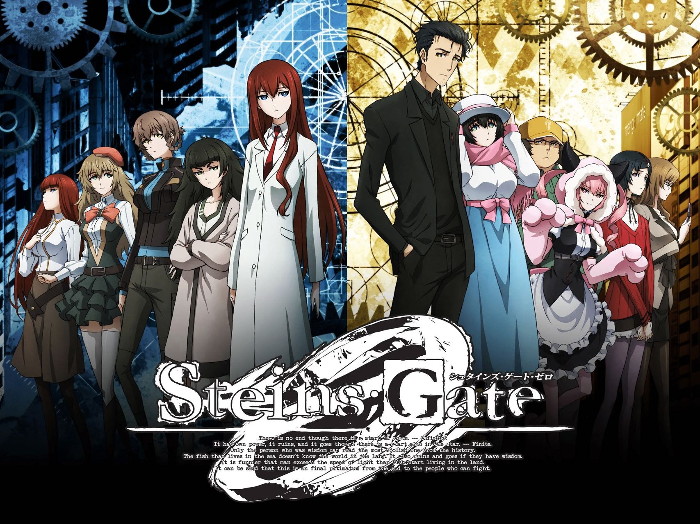
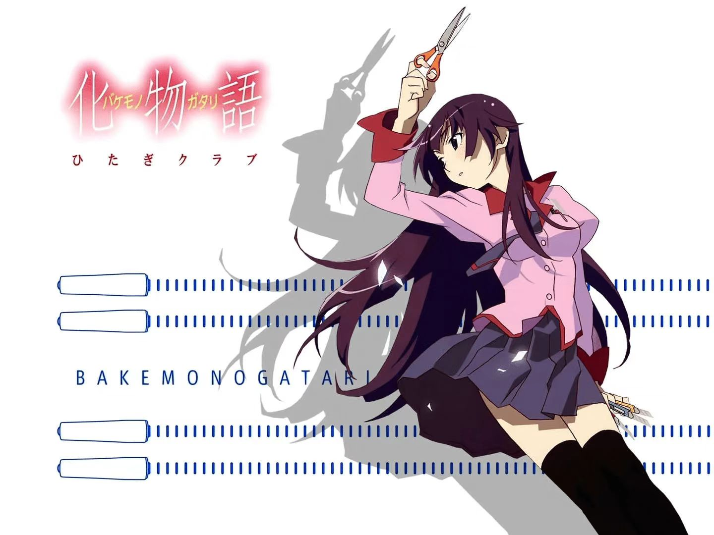
《化物语》是由日本小说家西尾维新著作、台湾插画家VOFAN负责插画的轻小说《物语系列》的第1弹，分为上、下卷。故事以高三学生阿良良木历为主角，讲述他在其所居住的镇上遭遇并参与种种日系、欧美系妖怪事件的故事。其前篇是《伤物语》，续篇则是《伪物语》。
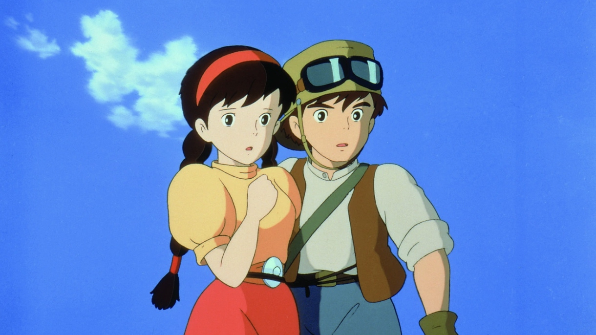
《天空之城》影片以19世纪的英格兰为背景，讲述了主人公少女希达和少年帕祖以及军队、海盗等人寻找传说中的天空之城拉普达的故事。
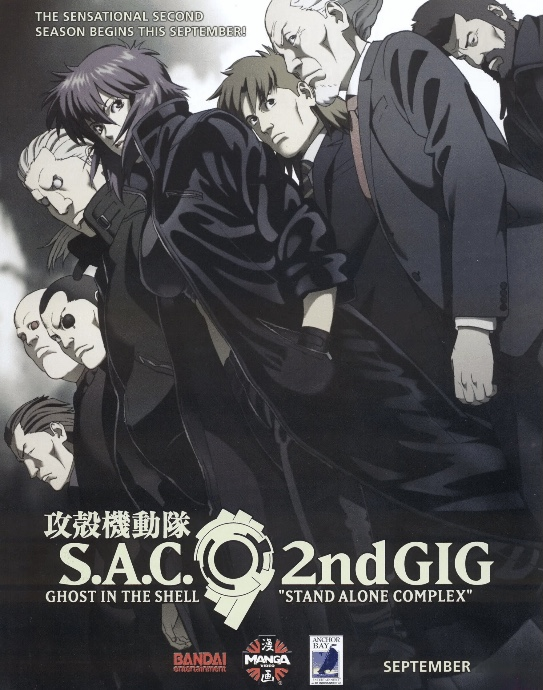
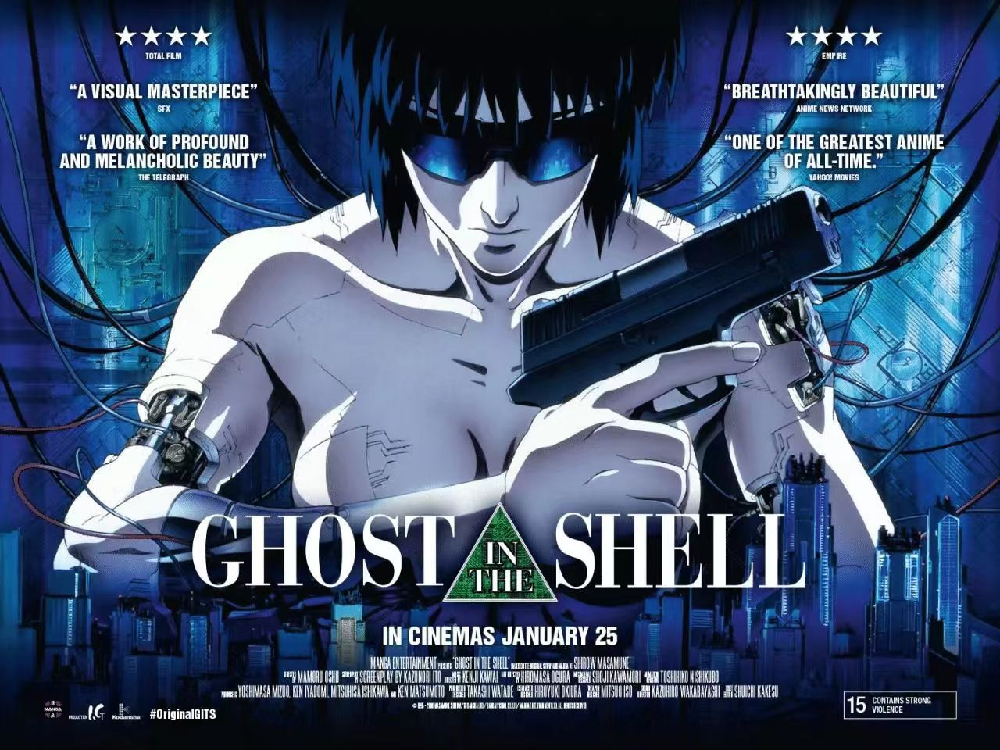
《新世纪福音战士》作品以发生了“第二次冲击”大灾害的2015年的世界为舞台，主要讲述了14岁少年少女们操控巨大泛用人形决战兵器“EVA”，与袭击第3新东京市的神秘敌人“使徒”之间的战斗故事。
《攻壳机动队》描绘了2029年的未来世界，人类与高度发达的科技共存，面临新型犯罪威胁。主角草剃素子带领的攻壳机动队（公安九课）负责解决这些复杂案件。
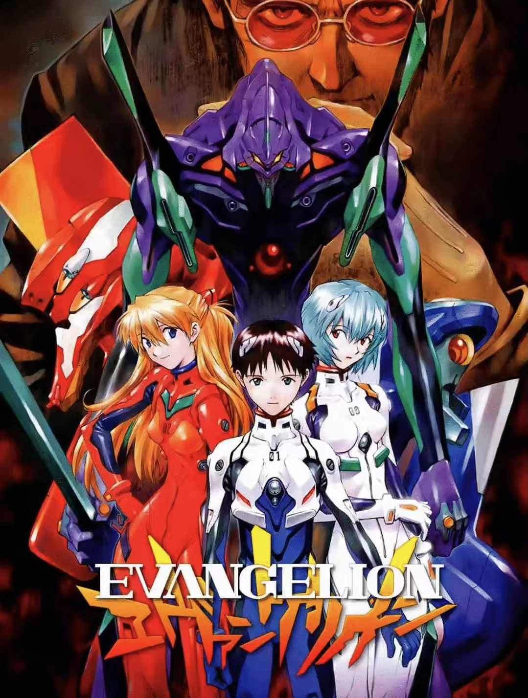
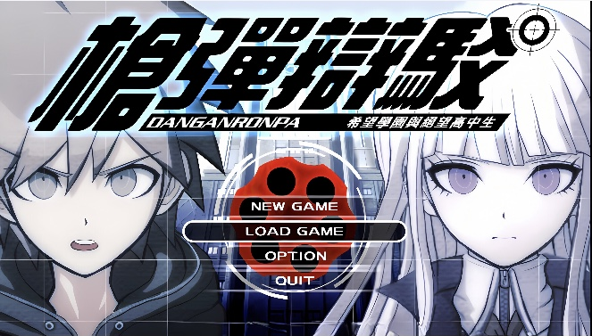
《弹丸论破：希望的学园与绝望的高中生》（Umineko no Naku Koro ni）：系列的首部作品，讲述了一群被困在希望峰学园的学生被迫参与一场互相残杀的游戏，只有找出真凶才能生存下来。
《弹丸论破》系列是由Spike开发的推理类冒险游戏系列，以其独特的高速推理动作游戏模式和引人入胜的故事情节而受到广泛的欢迎。
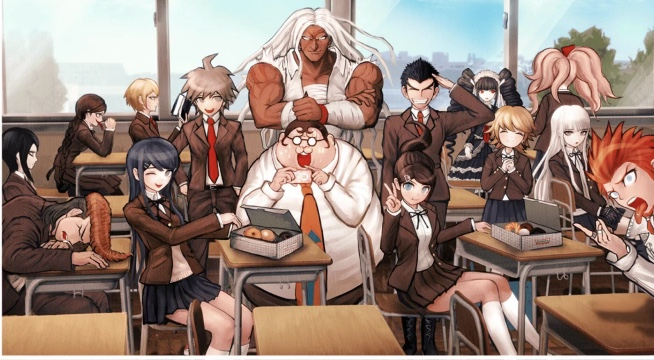
《新弹丸论破V3：大家互相厮杀的新学期》（Umineko no Naku Koro ni V3）：系列的第三部作品，故事背景设定在台球学院，引入了新的角色和游戏机制。
《超级弹丸论破2：再见绝望学园》（Umineko no Naku Koro ni Koro ni）：续作，故事转移到南国小岛，继续探索希望峰学园的秘密和学生之间的故事。
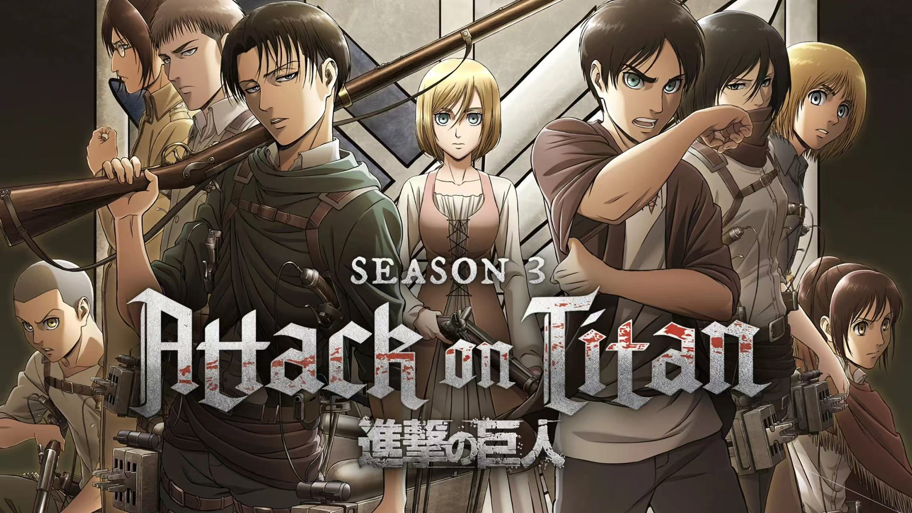
《逆转裁判》是一款由卡普空公司开发的法庭辩论型游戏，最初于2001年发行于日本Game Boy
Advance平台。游戏以其独特的游戏设计和引人入胜的故事情节获得了广泛的赞誉和商业成功，后续作品分别登陆NDS、3DS和Switch平台，并被移植到Steam和智能手机平台。《逆转裁判》的游戏玩法主要分为“法庭部分”和“侦探部分”。在“调查”中，玩家可以收集证据和信息，与相关角色交谈，出示证物以引出新的话题。在“法庭”中，玩家需要使用收集到的证据来指出证人证言中的矛盾，通过推理逐步揭示真相，为委托人赢得无罪的判决。
《进击的巨人》故事设定在一个虚构的世界中，人类为了生存而建造了三道巨大的墙——玛利亚之墙、罗塞之墙和希纳之墙，以保护自己免受墙外巨人的威胁。主角艾伦·耶格尔是一个梦想着走出墙外、探索世界的少年。当超大型巨人突然出现并破坏墙壁，引发人类生存危机时，艾伦与他的朋友们加入了调查兵团，为人类的自由和未来而战。
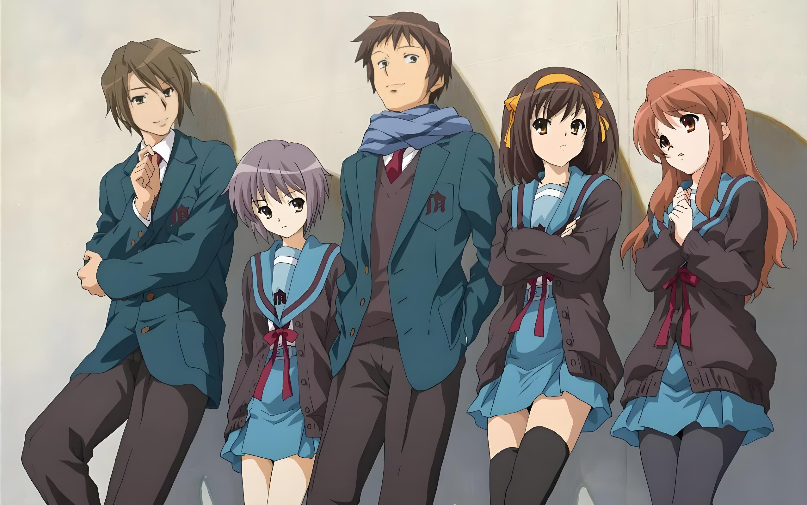
《凉宫春日的忧郁》“我对普通的人类没有兴趣。你们之中要是有外星人、未来人、异世界来的人、超能力者，就尽管来找我吧！以上。”这位就是在开学的自我介绍中，发言惊爆的凉宫春日。对于平淡无聊的日常生活无法忍受的她，创立了一个不可思议的社团——让世界变得更热闹的凉宫春日的团，通称SOS团。
虽然同班同学阿虚、寡言读书少女长门有希、萌萌学姐朝比奈实玖瑠、神秘转校生古泉一树等人都被她牵扯进来，但是阿虚以外的三人却有着凉宫春日不知道的大秘密。
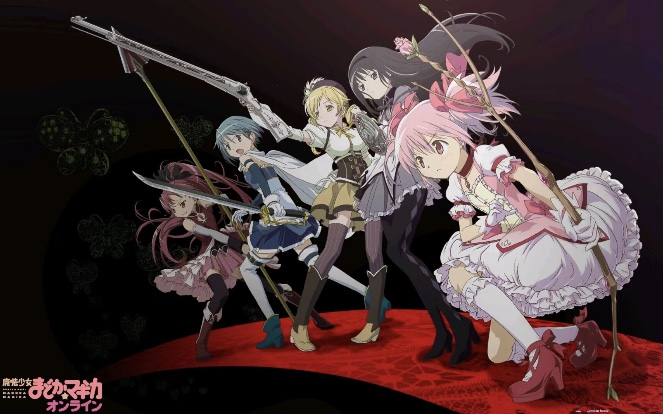
《魔法少女小圆》该剧讲述了平凡的少女们成为魔法少女与魔女进行对抗，与此同时作为人类逐渐成长保护世界的故事。主角鹿目圆是一个普通的初中生，她的生活因为神秘转学生晓美焰的出现而发生了巨大变化。晓美焰请求鹿目圆与丘比签订契约成为魔法少女，以对抗邪恶的魔女保护世界。在经历了一系列事件后，鹿目圆和她的朋友们逐渐了解到成为魔法少女的代价和魔法少女与魔女之间的残酷真相。
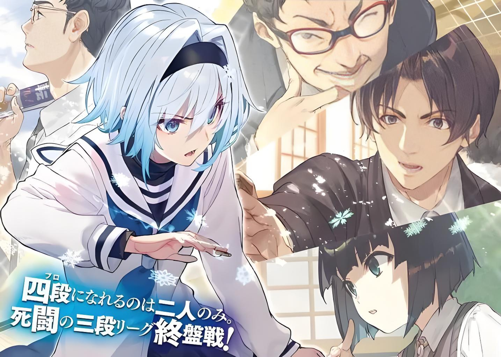
《龙王的工作！》是轻小说家白鸟士郎著作，插画家Shirabi负责插画，西游旗负责监修，GA文库所属的轻小说。小说单行本由SBCreative出版，繁体中文版由东立出版社发行。该小说亦改编为同名漫画及动画。
故事主要讲述了九头龙八一，一位16岁的将棋界的最强头衔保持者“龙王”，在头衔争夺战获胜后却陷入低潮，目前连败纪录不断更新。某一天，小学三年级的雏鹤爱，一位拥有超乎常人将棋才能的女孩，不请自来地来到了八一的家里，并成为了他的弟子，开始了与这位JS（女子小学生）的同居生活。八一也在与雏鹤爱的相处中，逐渐找回了对将棋的热爱和斗志。作品中还有其他丰富的角色和精彩的将棋对决，展现了将棋界的热血和奋斗。